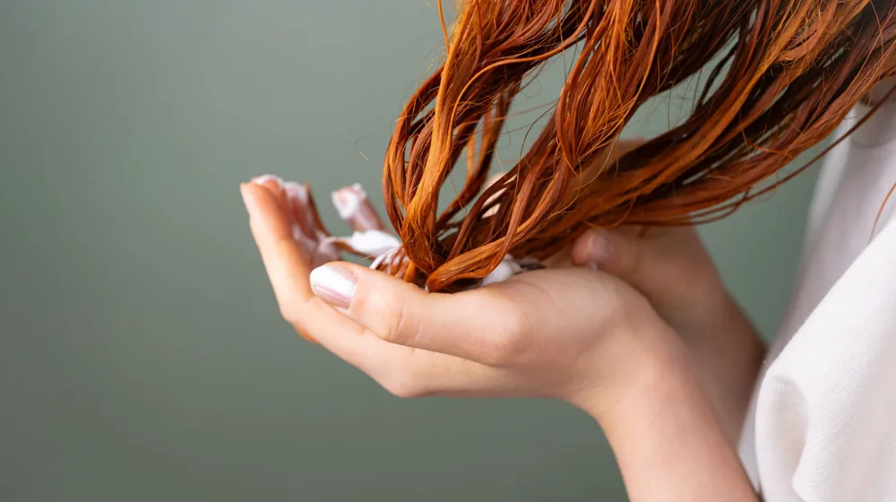

매일 하는 실수? 손상된 머리카락, 근본적으로 건강하게 되돌리는 5가지 비법
사진: https://kaboompics.com/ / Pexels (무료 이미지, 출처 표기)
손상된 머리카락, 왜 시작될까요?

잦은 염색, 펌 시술로 푸석하고 끊어지는 머리카락 때문에 고민이 많으셨을 겁니다. 단순히 눈에 보이는 문제뿐 아니라, 두피 건강까지 위협할 수 있는 모발 손상은 다양한 원인에서 비롯됩니다. 원인을 정확히 이해해야 효과적인 관리가 가능합니다.
가장 흔한 원인으로는 잦은 화학적 시술(염색, 펌)이 있습니다. 이 과정에서 모발의 단백질 구조가 손상되고, 큐티클(모발 보호막)이 벗겨져 모발 내부의 수분과 영양분이 쉽게 빠져나가게 됩니다. 또한, 드라이기, 고데기 등 열 기구의 과도한 사용이나 강한 자외선 노출도 모발을 건조하고 약하게 만드는 주범입니다.
잘못된 생활 습관도 손상을 부추깁니다. 젖은 모발을 거칠게 비벼 말리거나, 플라스틱 빗으로 강하게 빗는 행위는 큐티클층을 손상시킵니다. 불균형한 식습관으로 인한 영양 부족 역시 모발 성장에 필요한 단백질과 비타민 공급을 어렵게 하여 모발을 약하게 만들 수 있습니다.
샴푸부터 건조까지, 머리카락 손상 줄이는 기본 습관
일상적인 머리 감기와 건조 과정만 제대로 바꿔도 모발 손상을 크게 줄일 수 있습니다. 사소해 보이지만 꾸준히 실천하면 큰 차이를 만들 수 있는 기본 습관들을 소개합니다.
- 미온수로 두피 적시기: 샴푸 전 35~38도 정도의 미온수로 두피와 모발을 충분히 적셔줍니다. 뜨거운 물은 두피를 건조하게 하고 모발을 손상시킬 수 있으며, 찬물은 노폐물 제거에 비효율적입니다.
- 두피 위주 샴푸: 샴푸를 손바닥에 덜어 충분히 거품을 낸 후, 모발보다는 두피를 중심으로 부드럽게 마사지하듯 감습니다. 모발은 샴푸 거품이 흐르면서 자연스럽게 세정되도록 합니다.
- 트리트먼트/린스는 모발 끝에: 샴푸 후 물기를 가볍게 제거한 다음, 트리트먼트나 린스를 모발 끝 부분에 집중적으로 바릅니다. 두피에 닿지 않도록 주의하고, 제품별 권장 시간에 따라 충분히 흡수시킨 후 깨끗하게 헹궈냅니다.
- 부드러운 타월 드라이: 머리를 감은 후 타월로 모발을 비비거나 문지르지 말고, 톡톡 두드리거나 지그시 눌러 물기를 제거합니다. 마찰은 큐티클을 손상시키고 정전기를 유발할 수 있습니다.
- 드라이기는 적정 거리 유지 & 찬바람 활용: 드라이기를 사용할 때는 모발에서 20cm 이상 거리를 두고, 뜨거운 바람보다는 미지근하거나 찬 바람으로 말리는 것이 좋습니다. 특히 두피를 먼저 말린 후 모발을 건조합니다.
- 열 보호제 사용: 드라이기나 고데기 등 열 기구를 사용하기 전에는 반드시 열 보호 기능이 있는 헤어 에센스나 오일을 바르는 것이 중요합니다. 이는 모발에 보호막을 형성하여 열로 인한 손상을 최소화합니다.
모발 타입별 선택: 손상모 케어 필수템 가이드
다양한 헤어 케어 제품 중 내 모발에 맞는 것을 선택하는 것이 중요합니다. 특히 손상모는 보습과 영양 공급에 중점을 둔 제품을 사용하는 것이 효과적입니다.
2026년 8월 기준, 시중에는 다양한 손상모 전용 제품들이 출시되어 있습니다. 자신의 모발 상태와 성분표를 꼼꼼히 확인하여 선택하시길 권장합니다.
손상모 회복을 위한 홈케어 루틴
꾸준한 홈케어는 손상모를 건강하게 회복시키는 데 결정적인 역할을 합니다. 다음과 같은 루틴을 통해 모발 건강을 되찾아 보세요.
- 주 1~2회 헤어팩 사용: 집중적인 영양 공급을 위해 주 1~2회 헤어팩이나 트리트먼트를 사용합니다. 제품을 도포한 후 스팀 타월로 머리를 감싸면 흡수율을 높일 수 있습니다. 최소 10분 이상 충분히 방치한 후 미온수로 깨끗하게 헹궈냅니다.
- 두피 마사지: 모발이 시작되는 두피 건강은 모발의 질을 결정합니다. 손가락 지문 부분으로 두피 전체를 부드럽게 마사지하여 혈액순환을 촉진하고, 모근에 영양 공급이 원활하도록 돕습니다. 두피 전용 에센스를 함께 사용하면 더욱 좋습니다.
- 영양제 섭취: 모발 건강에 도움이 되는 영양 성분으로는 비오틴, 단백질, 비타민A, C, E, 철분 등이 있습니다. 평소 식단으로 충분히 섭취하기 어렵다면 영양제 섭취를 고려해 볼 수 있습니다. 다만, 특정 질환이 있다면 전문의와 상담 후 섭취하는 것이 안전합니다.
- 베개 커버 관리: 잠자는 동안 모발과 베개 커버의 마찰은 생각보다 손상을 유발합니다. 실크나 새틴 등 마찰이 적은 소재의 베개 커버를 사용하거나, 머리를 묶고 자는 것보다는 느슨하게 땋거나 풀어두는 것이 좋습니다.
자주 묻는 질문: 머리카락 손상 관리에 대한 오해와 진실
머리카락 손상 관리에 대해 흔히 궁금해하는 질문들을 모아봤습니다.
Q1: 매일 머리를 감으면 더 손상될까요?
A: 아닙니다. 두피와 모발에 쌓인 노폐물과 먼지는 모발 건강을 해칠 수 있으므로, 매일 감는 것이 위생적이며 오히려 좋습니다. 다만, 세정력이 강한 샴푸 대신 순한 제품을 사용하고, 올바른 샴푸 및 건조 방법을 지키는 것이 중요합니다.
Q2: 머리카락을 자르면 손상모가 회복되나요?
A: 이미 손상된 모발은 완전하게 원래 상태로 되돌릴 수 없습니다. 손상된 부분을 잘라내면 새로 자라나는 건강한 모발을 유지하는 데 도움이 되지만, 잘린 모발 자체가 회복되는 것은 아닙니다. 주기적인 커트는 손상모의 확산을 막고 모발 끝 갈라짐을 예방하는 데 유용합니다.
Q3: 천연 오일만 바르면 모발이 좋아질까요?
A: 천연 오일(코코넛 오일, 아르간 오일 등)은 모발에 보습과 윤기를 더하는 데 효과적이지만, 모든 손상모를 해결해 주지는 않습니다. 오일은 주로 모발 표면을 코팅하는 역할을 하므로, 모발 내부의 손상까지 복구하려면 단백질 위주의 트리트먼트와 같은 전문적인 제품을 함께 사용하는 것이 좋습니다.
효과적인 머리카락 손상 관리를 위한 체크리스트
건강한 머리카락을 위해 지금 당장 실천할 수 있는 것들을 점검해 보세요. 이 체크리스트를 꾸준히 따른다면 분명 달라지는 모발을 경험할 수 있을 겁니다.
- 샴푸 전 미온수로 충분히 두피 적시기
- 샴푸는 두피 중심으로, 린스/트리트먼트는 모발 끝에 사용
- 젖은 모발은 부드럽게 타월 드라이하기
- 드라이기 사용 시 열 보호제 바르고 찬 바람으로 말리기
- 주 1~2회 헤어팩 또는 트리트먼트로 집중 관리하기
- 모발 손상에 도움 되는 영양 성분 섭취 고려하기
- 잦은 염색/펌 등 화학 시술 주기 조절하기
- 실크 베개 커버 사용 등 수면 중 마찰 줄이기
- 정기적으로 상한 모발 끝 정리하기
🔗 이 글도 함께 보면 좋아요: 향수 지속력, 2배로 늘리는 7가지 비법: 하루 종일 은은하게
관련 추천 상품
손상모 샴푸, 극손상모 트리트먼트, 헤어 에센스 관련 인기 상품 보러가기
이 포스팅은 쿠팡 파트너스 활동의 일환으로, 이에 따른 일정액의 수수료를 제공받습니다.